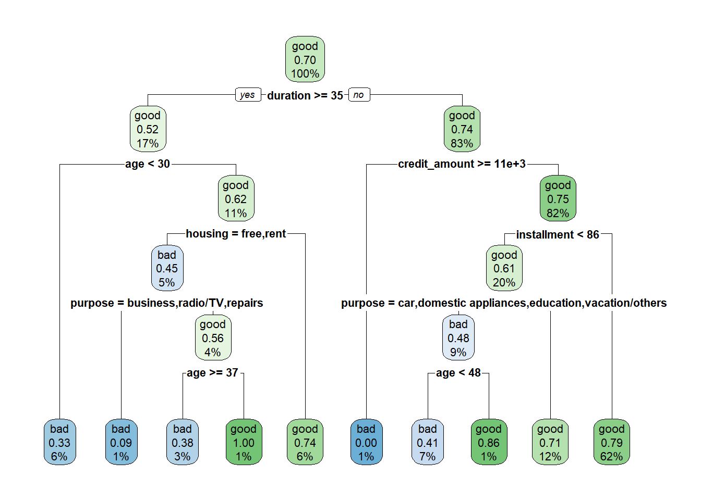
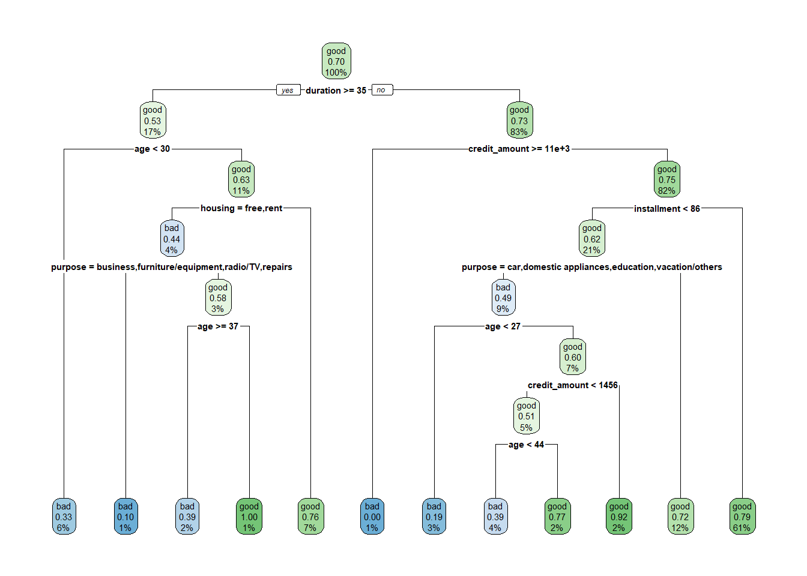
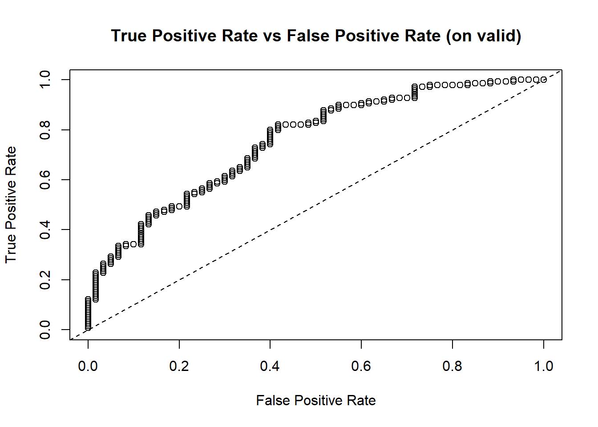
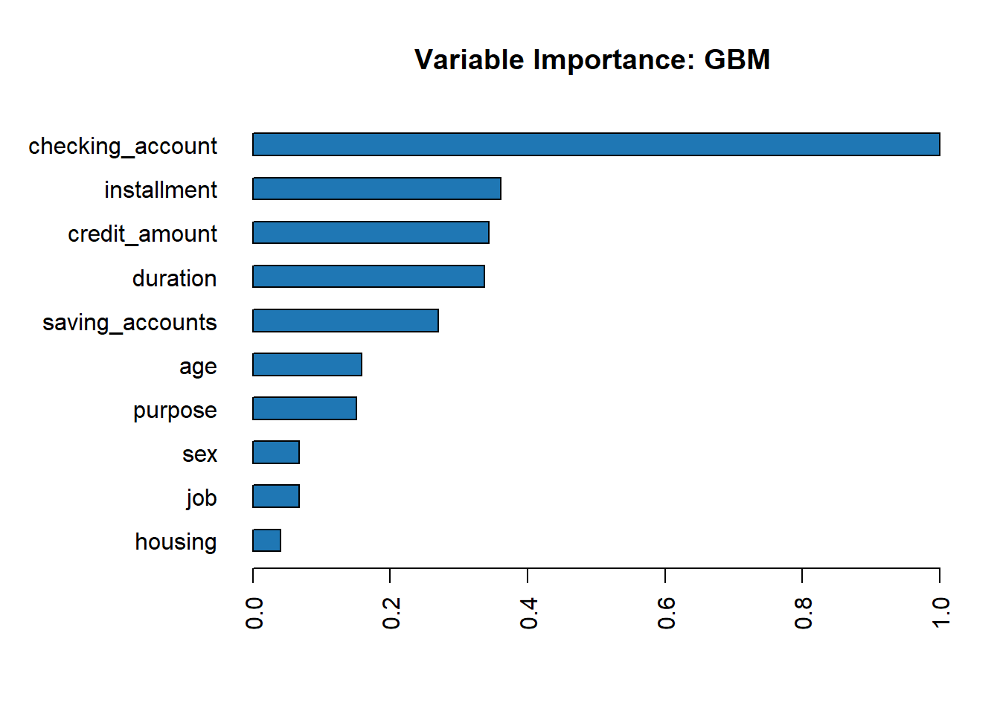
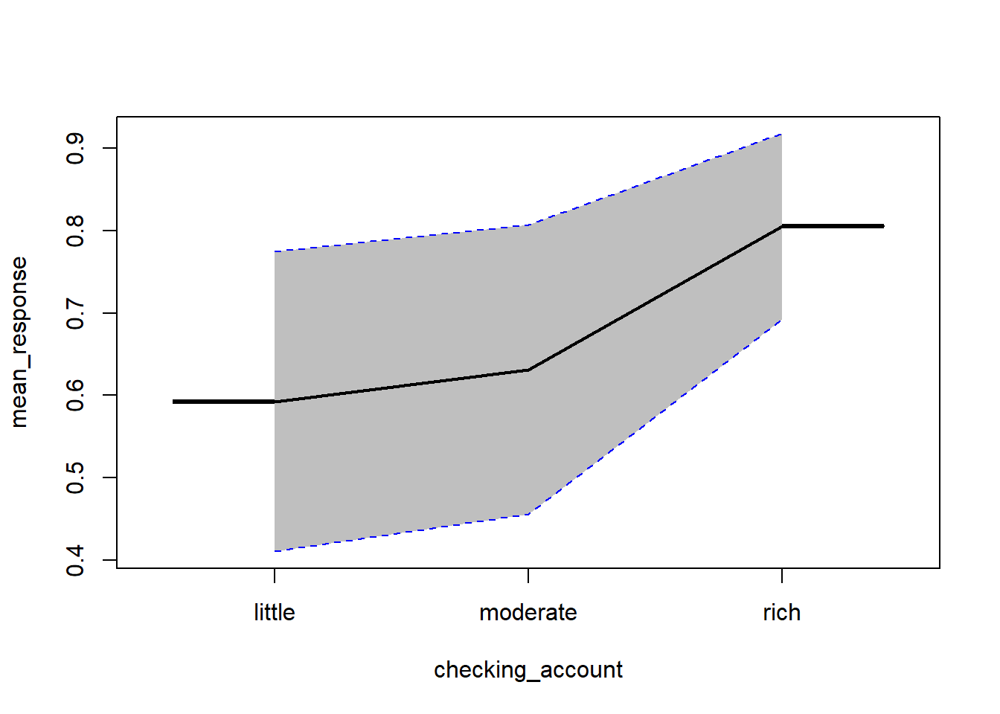
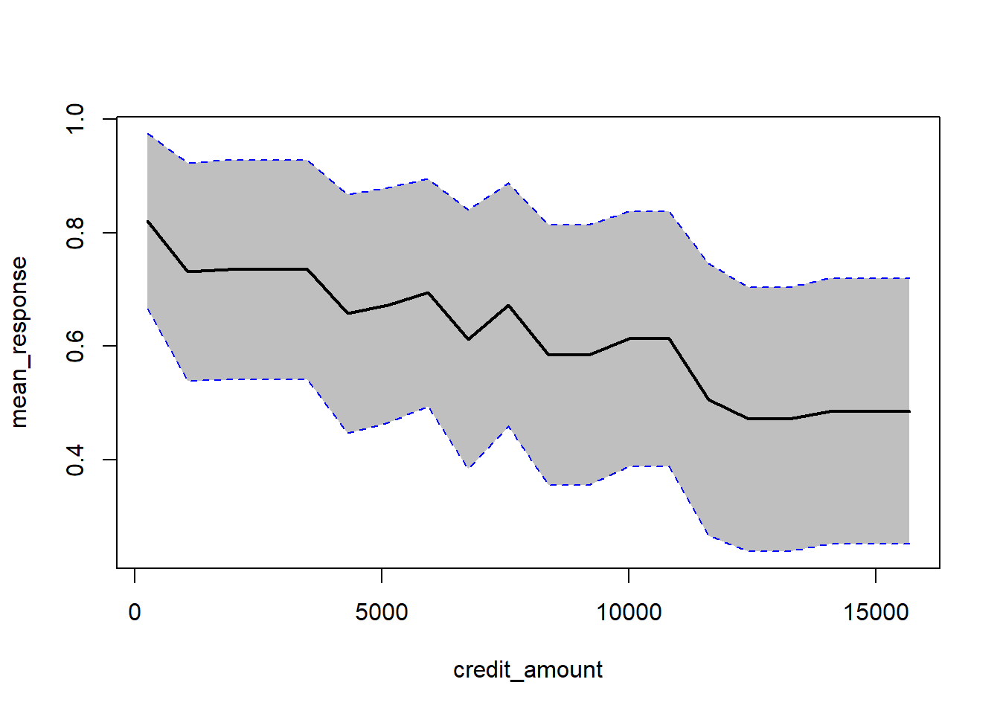

5 Klasyfikacja
5.1 Wprowadzenie
Celem analizy klasyfikacji jest zbudowanie modelu predykcyjnego, który w rezultacie zwróci prawdopodobieństwo przynależności danej obserwacji do jeden z dwóch klas. Przykładowo na podstawie danych o klientach banku można stworzyć model oceny zdolności kredytowej dla nowych klientów. W tym rozdziale posłużymy się German Credit Data do budowy takiego predyktora. Wybrane kolumny z tego zbioru znajdują się w tym pliku.
W pierwszym kroku wczytujemy dane i dokonujemy niezbędnych przekształceń tego zbioru. Z wykorzystaniem funkcji clean_names() z pakietu janitor zamieniamy nazwy kolumn w przyjazne przetwarzaniu przez komputer (brak spacji, polskich znaków, itp.). Następnie zmienne tekstowe zamieniamy na zmienne jakościowe - faktory oraz tworzymy nową kolumnę zawierającą wysokość raty kredytu.
library(tidyverse)
library(readxl)
library(janitor)
credit <- read_xlsx("data/german_credit_data.xlsx") %>%
clean_names() %>%
mutate_if(is.character, as.factor) %>%
mutate(job=as.factor(job),
installment=credit_amount/duration)
summary(credit)## age sex job housing saving_accounts
## Min. :19.00 female:310 0: 22 free:108 little :603
## 1st Qu.:27.00 male :690 1:200 own :713 moderate :103
## Median :33.00 2:630 rent:179 quite rich: 63
## Mean :35.55 3:148 rich : 48
## 3rd Qu.:42.00 NA's :183
## Max. :75.00
##
## checking_account credit_amount duration purpose
## little :274 Min. : 250 Min. : 4.0 car :337
## moderate:269 1st Qu.: 1366 1st Qu.:12.0 radio/TV :280
## rich : 63 Median : 2320 Median :18.0 furniture/equipment:181
## NA's :394 Mean : 3271 Mean :20.9 business : 97
## 3rd Qu.: 3972 3rd Qu.:24.0 education : 59
## Max. :18424 Max. :72.0 repairs : 22
## (Other) : 24
## risk installment
## bad :300 Min. : 24.06
## good:700 1st Qu.: 89.60
## Median : 130.33
## Mean : 167.69
## 3rd Qu.: 206.18
## Max. :2482.67
## Zamiana cech tekstowych na faktory pozwala w podsumowaniu wygenerowanym przez funkcję summary() obserwować od razu częstości poszczególnych wariantów. Możemy zaobserwować występowanie braków danych w zmiennych saving accounts i checking_account. Generalnie jest to zbyt duży problem, bo tylko niektóre algorytmy klasyfikacji nie obsługują braków danych w zmiennych objaśniających. Ważne jest, żeby braki danych nie występowały dla cechy decyzyjnej.
Obserwacje z brakami danych można usunąć, ale często spowodowałoby to znaczne zmniejszenie próby badawczej, zatem stosuje się metody mające na celu uzupełnienie braków danych. W najprostszym przypadku braki można zastąpić średnią, medianą lub dominantą. Do bardziej zaawansowanych sposobów należy metoda najbliższych sąsiadów (VIM) albo imputacja wielokrotna (mice).
W omawianym przypadku klientów wiarygodnych jest 700, a tych, którzy nie spłacili zobowiązania 300. Mamy zatem do czynienia z niezbalansowaną próbą. W idealnym przypadku klasyfikacji, przypadków z każdej grupy powinno być tyle samo. W przeciwnym przypadku model będzie działał lepiej dla klasy większościowej. Najprostszą metodą balansowania danych jest upsampling czyli dolosowywanie obserwacji z klasy mniejszościowej, tak aby wyrównać liczebności. Przeciwieństwem tego podejścia jest downsampling. Alternatywnie można zastosować metodę SMOTE, która generuje sztuczne obserwacje dla klasy mniejszościowej (pakiety DMwR, imbalance).
5.2 Drzewa decyzyjne
Najpopularniejszą metodą klasyfikacji są drzewa decyzyjne, które charakteryzują się z reguły dobrą efektywnością i pozwalają na łatwą interpretację zastosowanych reguł klasyfikacji. Wykorzystamy pakiet rpart do stworzenia drzewa oraz pakiet rpart.plot do wizualizacji.
Proces tworzenia drzewa jest bardzo prosty, a argumenty w funkcji rpart() są takie same jak w regresji liniowej.

W rezultacie uzyskujemy drzewo decyzyjne z optymalnie dobranymi zmiennymi objaśniającymi. W każdym węźle drzewa podane są następujące wartości: - prognozowana klasa, prawdopodobieństwa zaklasyfikowania do klasy pozytywnej, odsetek obserwacji w węźle. Domyślnym progiem klasyfikacji jest wartość 0,5. Jeżeli prawdopodobieństwo jest poniżej tej wartości to nastąpi przypisanie do grupy klientów niespłacających pożyczki, a jeśli powyżej to do tej drugiej grupy.
Oceny jakości klasyfikatora dokonuje się na podstawie macierzy pomyłek oraz miar wyznaczonych na jej podstawie. Najpopularniejsze z nich to:
- dokładność (accuracy): % poprawnie zaklasyfikowanych
- precyzja (precison): % poprawnie rozpoznanych przypadków pozytywnych TP/(TP+FP)
- czułość (sensitivity/recall): % prawdziwie pozytywnych TP/(TP+FN)
- swoistość (specificity): % prawdziwie negatywnych TN/(TN+FP)
- F1: średnia harmoniczna z czułości i precyzji 2TP/(2TP+FP+FN)
Im wyższe wartości tych miar tym lepszy klasyfikator. Do wyznaczenia tych miar w R służy funkcja z pakietu caret. W tym celu trzeba wyznaczyć wartości prognozowanej klasy na podstawie modelu.
Argument type określa typ predykcji: "class" oznacza prognozowaną klasę, a "prob" prawdopodobieństwo. Na tej podstawie oraz wartości rzeczywistych tworzymy macierz pomyłek:
confusionMatrix(data = pred_risk_m1, reference = credit$risk,
positive = "good", mode = "everything")## Confusion Matrix and Statistics
##
## Reference
## Prediction bad good
## bad 117 60
## good 183 640
##
## Accuracy : 0.757
## 95% CI : (0.7292, 0.7833)
## No Information Rate : 0.7
## P-Value [Acc > NIR] : 3.553e-05
##
## Kappa : 0.3447
##
## Mcnemar's Test P-Value : 5.024e-15
##
## Sensitivity : 0.9143
## Specificity : 0.3900
## Pos Pred Value : 0.7776
## Neg Pred Value : 0.6610
## Precision : 0.7776
## Recall : 0.9143
## F1 : 0.8404
## Prevalence : 0.7000
## Detection Rate : 0.6400
## Detection Prevalence : 0.8230
## Balanced Accuracy : 0.6521
##
## 'Positive' Class : good
## W naszym przykładzie spośród 1000 klientów, model jako wiarygodnych kredytobiorców zaklasyfikował 640, a 117 prawidłowo jako osoby, które nie spłaciły zobowiązania. W 60 przypadkach model uznał brak zdolności kredytowej u klienta, podczas gdy w rzeczywistości pożyczka została spłacona. Dla 183 klientów podjętoby odwrotną decyzję - model przyznałby kredyt, a w rzeczywistości osoby te nie spłaciły pożyczki. Dokładność w tym przypadku wynosi 75,7%, a precyzja 77,8%. Czułość tego predyktora jest wysoka (91,4%), ale swoistość już nie (39%), na co może mieć wpływ niezbalansowanie danych.
Przedstawiony powyżej przykład miał charakter analizy ekspolarycyjnej - opartej na całym zbiorze danych. W praktyce stosuje się podejście polegające na podziale zbioru danych na zbiór treningowy oraz walidacyjny. Na danych ze zbioru treningowego buduje się model, który następnie testowany jest na danych, których nigdy wcześniej “nie widział” - na zbiorze walidacyjnym. Miary klasyfikacji obliczone na podstawie zbioru walidacyjnego dostarczają realnej oceny jakości klasyfikatora.
Do podziału zbioru służy funkcja createDataPartition() z pakietu caret. Zbiory treningowy i walidacyjny tworzone są w taki sposób, aby zachować proporcje w zmiennej decyzyjnej. Domyślnie funkcja dzieli zbiór danych w układzie 50/50, natomiast w tym przykładzie 80% obserwacji umieścimy w zbiorze treningowym.
set.seed(123)
split <- createDataPartition(y = credit$risk, p = 0.8)
train_credit <- credit[split$Resample1,]
valid_credit <- credit[-split$Resample1,]
summary(train_credit)## age sex job housing saving_accounts
## Min. :19.00 female:252 0: 17 free: 80 little :486
## 1st Qu.:27.00 male :548 1:159 own :576 moderate : 85
## Median :33.00 2:504 rent:144 quite rich: 49
## Mean :35.43 3:120 rich : 34
## 3rd Qu.:42.00 NA's :146
## Max. :75.00
##
## checking_account credit_amount duration purpose
## little :228 Min. : 276 Min. : 4.00 car :284
## moderate:205 1st Qu.: 1374 1st Qu.:12.00 radio/TV :219
## rich : 46 Median : 2326 Median :18.00 furniture/equipment:139
## NA's :321 Mean : 3300 Mean :21.02 business : 76
## 3rd Qu.: 3965 3rd Qu.:24.00 education : 46
## Max. :18424 Max. :72.00 repairs : 17
## (Other) : 19
## risk installment
## bad :240 Min. : 24.06
## good:560 1st Qu.: 87.18
## Median : 131.74
## Mean : 168.95
## 3rd Qu.: 206.06
## Max. :2482.67
## ## age sex job housing saving_accounts
## Min. :20.00 female: 58 0: 5 free: 28 little :117
## 1st Qu.:27.00 male :142 1: 41 own :137 moderate : 18
## Median :34.00 2:126 rent: 35 quite rich: 14
## Mean :36.02 3: 28 rich : 14
## 3rd Qu.:42.00 NA's : 37
## Max. :74.00
##
## checking_account credit_amount duration purpose
## little :46 Min. : 250 Min. : 4.00 radio/TV :61
## moderate:64 1st Qu.: 1308 1st Qu.:12.00 car :53
## rich :17 Median : 2261 Median :18.00 furniture/equipment:42
## NA's :73 Mean : 3157 Mean :20.43 business :21
## 3rd Qu.: 4003 3rd Qu.:24.00 education :13
## Max. :15672 Max. :48.00 repairs : 5
## (Other) : 5
## risk installment
## bad : 60 Min. : 38.12
## good:140 1st Qu.: 93.12
## Median :127.23
## Mean :162.62
## 3rd Qu.:206.21
## Max. :730.80
## Wykorzystując tak przygotowane dane możemy jeszcze raz wykorzystać drzewa decyzyjne do stworzenia klasyfikatora, ale tym razem wyłącznie na zbiorze treningowym.

Utworzone drzewo będzie różnić się od tego, które powstało na podstawie całego zbioru danych. Następnie obliczamy prognozowane klasy na obu zbiorach i wyznaczamy macierze pomyłek.
pred_risk_m2_train <- predict(object = m2, newdata = train_credit, type = "class")
pred_risk_m2_valid <- predict(object = m2, newdata = valid_credit, type = "class")
# train
confusionMatrix(data = pred_risk_m2_train, reference = train_credit$risk,
positive = "good", mode = "everything")## Confusion Matrix and Statistics
##
## Reference
## Prediction bad good
## bad 94 38
## good 146 522
##
## Accuracy : 0.77
## 95% CI : (0.7392, 0.7987)
## No Information Rate : 0.7
## P-Value [Acc > NIR] : 5.783e-06
##
## Kappa : 0.3716
##
## Mcnemar's Test P-Value : 3.067e-15
##
## Sensitivity : 0.9321
## Specificity : 0.3917
## Pos Pred Value : 0.7814
## Neg Pred Value : 0.7121
## Precision : 0.7814
## Recall : 0.9321
## F1 : 0.8502
## Prevalence : 0.7000
## Detection Rate : 0.6525
## Detection Prevalence : 0.8350
## Balanced Accuracy : 0.6619
##
## 'Positive' Class : good
## # valid
confusionMatrix(data = pred_risk_m2_valid, reference = valid_credit$risk,
positive = "good", mode = "everything")## Confusion Matrix and Statistics
##
## Reference
## Prediction bad good
## bad 18 11
## good 42 129
##
## Accuracy : 0.735
## 95% CI : (0.6681, 0.7948)
## No Information Rate : 0.7
## P-Value [Acc > NIR] : 0.1579
##
## Kappa : 0.2598
##
## Mcnemar's Test P-Value : 0.00003775
##
## Sensitivity : 0.9214
## Specificity : 0.3000
## Pos Pred Value : 0.7544
## Neg Pred Value : 0.6207
## Precision : 0.7544
## Recall : 0.9214
## F1 : 0.8296
## Prevalence : 0.7000
## Detection Rate : 0.6450
## Detection Prevalence : 0.8550
## Balanced Accuracy : 0.6107
##
## 'Positive' Class : good
## Generalnie wyniki w obu przypadkach powinny być do siebie zbliżone, przy czym na zbiorze walidacyjnym miary jakości predycji mogą być trochę gorsze. Bardzo wysoka wartość dokładność na zbiorze treningowym, a niska na zbiorze walidacyjnym jest symptomem przeuczenia modelu - algorytm nauczył się odpowiedzi “na pamięć”.
5.3 Gradient Boosting Machine
Spróbujemy polepszyć jakość klasyfikacji z wykorzystaniem metody gradient boostingu. W tym celu wykorzystamy pakiet h2o, który dostarcza kompleksowych rozwiązań z zakresu machine learning. W pierwszej kolejności trzeba zmienić format danych na ten obsługowany przez pakiet.
##
## H2O is not running yet, starting it now...
##
## Note: In case of errors look at the following log files:
## C:\Users\lukas\AppData\Local\Temp\RtmpqezXOo\file17a467324088/h2o_lukas_started_from_r.out
## C:\Users\lukas\AppData\Local\Temp\RtmpqezXOo\file17a419754323/h2o_lukas_started_from_r.err
##
##
## Starting H2O JVM and connecting: . Connection successful!
##
## R is connected to the H2O cluster:
## H2O cluster uptime: 5 seconds 23 milliseconds
## H2O cluster timezone: Europe/Warsaw
## H2O data parsing timezone: UTC
## H2O cluster version: 3.30.0.1
## H2O cluster version age: 2 months
## H2O cluster name: H2O_started_from_R_lukas_xpm862
## H2O cluster total nodes: 1
## H2O cluster total memory: 3.98 GB
## H2O cluster total cores: 8
## H2O cluster allowed cores: 8
## H2O cluster healthy: TRUE
## H2O Connection ip: localhost
## H2O Connection port: 54321
## H2O Connection proxy: NA
## H2O Internal Security: FALSE
## H2O API Extensions: Amazon S3, Algos, AutoML, Core V3, TargetEncoder, Core V4
## R Version: R version 4.0.0 (2020-04-24)h2o.no_progress() # brak pasków postępu
train_credit_h2o <- as.h2o(train_credit)
valid_credit_h2o <- as.h2o(valid_credit)Następnie deklarujemy nazwy wykorzystywanych zmiennych i uruchamiamy procedurę:
y_var <- "risk"
x_var <- names(credit)[-10]
m3 <- h2o.gbm(x = x_var,
y = y_var,
training_frame = train_credit_h2o,
validation_frame = valid_credit_h2o,
seed = 1)
m3## Model Details:
## ==============
##
## H2OBinomialModel: gbm
## Model ID: GBM_model_R_1591256341659_1
## Model Summary:
## number_of_trees number_of_internal_trees model_size_in_bytes min_depth
## 1 50 50 13916 5
## max_depth mean_depth min_leaves max_leaves mean_leaves
## 1 5 5.00000 7 26 17.66000
##
##
## H2OBinomialMetrics: gbm
## ** Reported on training data. **
##
## MSE: 0.07736868
## RMSE: 0.2781523
## LogLoss: 0.2767961
## Mean Per-Class Error: 0.09880952
## AUC: 0.9704167
## AUCPR: 0.9862121
## Gini: 0.9408333
## R^2: 0.6315777
##
## Confusion Matrix (vertical: actual; across: predicted) for F1-optimal threshold:
## bad good Error Rate
## bad 202 38 0.158333 =38/240
## good 22 538 0.039286 =22/560
## Totals 224 576 0.075000 =60/800
##
## Maximum Metrics: Maximum metrics at their respective thresholds
## metric threshold value idx
## 1 max f1 0.568378 0.947183 232
## 2 max f2 0.425774 0.965217 277
## 3 max f0point5 0.642867 0.951409 205
## 4 max accuracy 0.576117 0.925000 228
## 5 max precision 0.985657 1.000000 0
## 6 max recall 0.314379 1.000000 319
## 7 max specificity 0.985657 1.000000 0
## 8 max absolute_mcc 0.576117 0.819649 228
## 9 max min_per_class_accuracy 0.644367 0.912500 204
## 10 max mean_per_class_accuracy 0.642867 0.914286 205
## 11 max tns 0.985657 240.000000 0
## 12 max fns 0.985657 559.000000 0
## 13 max fps 0.039037 240.000000 399
## 14 max tps 0.314379 560.000000 319
## 15 max tnr 0.985657 1.000000 0
## 16 max fnr 0.985657 0.998214 0
## 17 max fpr 0.039037 1.000000 399
## 18 max tpr 0.314379 1.000000 319
##
## Gains/Lift Table: Extract with `h2o.gainsLift(<model>, <data>)` or `h2o.gainsLift(<model>, valid=<T/F>, xval=<T/F>)`
## H2OBinomialMetrics: gbm
## ** Reported on validation data. **
##
## MSE: 0.1742677
## RMSE: 0.4174538
## LogLoss: 0.5334558
## Mean Per-Class Error: 0.4166667
## AUC: 0.7427381
## AUCPR: 0.8549562
## Gini: 0.4854762
## R^2: 0.1701539
##
## Confusion Matrix (vertical: actual; across: predicted) for F1-optimal threshold:
## bad good Error Rate
## bad 10 50 0.833333 =50/60
## good 0 140 0.000000 =0/140
## Totals 10 190 0.250000 =50/200
##
## Maximum Metrics: Maximum metrics at their respective thresholds
## metric threshold value idx
## 1 max f1 0.251100 0.848485 189
## 2 max f2 0.251100 0.933333 189
## 3 max f0point5 0.586949 0.823864 140
## 4 max accuracy 0.540278 0.760000 149
## 5 max precision 0.977718 1.000000 0
## 6 max recall 0.251100 1.000000 189
## 7 max specificity 0.977718 1.000000 0
## 8 max absolute_mcc 0.586949 0.413905 140
## 9 max min_per_class_accuracy 0.726448 0.700000 115
## 10 max mean_per_class_accuracy 0.586949 0.705952 140
## 11 max tns 0.977718 60.000000 0
## 12 max fns 0.977718 139.000000 0
## 13 max fps 0.074617 60.000000 199
## 14 max tps 0.251100 140.000000 189
## 15 max tnr 0.977718 1.000000 0
## 16 max fnr 0.977718 0.992857 0
## 17 max fpr 0.074617 1.000000 199
## 18 max tpr 0.251100 1.000000 189
##
## Gains/Lift Table: Extract with `h2o.gainsLift(<model>, <data>)` or `h2o.gainsLift(<model>, valid=<T/F>, xval=<T/F>)`Z funkcji pakietu h2o dostajemy pokaźny wydruk podsumowania klasyfikacji wraz z macierzami pomyłek. Pakiet h2o optymalizuje jakość predycji maksymalizująć miarę F1 - średnią harmoniczną czułości i swoistości. Zatem w tym przypadku podział na klasy wg prawdopodobieństwa nie odbywa się już na podstawie wartości 0,5.
Stworzymy macierz pomyłek dla zbioru walidacyjnego w tym samym formacie, co wcześniej:
pred_risk_m3_valid <- as.data.frame(h2o.predict(object = m3, newdata = valid_credit_h2o))
confusionMatrix(data = pred_risk_m3_valid$predict, reference = valid_credit$risk,
positive = "good", mode = "everything")## Confusion Matrix and Statistics
##
## Reference
## Prediction bad good
## bad 10 0
## good 50 140
##
## Accuracy : 0.75
## 95% CI : (0.684, 0.8084)
## No Information Rate : 0.7
## P-Value [Acc > NIR] : 0.06955
##
## Kappa : 0.2188
##
## Mcnemar's Test P-Value : 4.219e-12
##
## Sensitivity : 1.0000
## Specificity : 0.1667
## Pos Pred Value : 0.7368
## Neg Pred Value : 1.0000
## Precision : 0.7368
## Recall : 1.0000
## F1 : 0.8485
## Prevalence : 0.7000
## Detection Rate : 0.7000
## Detection Prevalence : 0.9500
## Balanced Accuracy : 0.5833
##
## 'Positive' Class : good
## Możemy zauważyć nieznaczną poprawę dokładności predykcji w porównaniu do drzewa decyzyjnego - z 73,5% do 75%. Natomiast ten algorytm został uruchomiony z domyślnymi parametrami i być może wybór innych wartości mógłby poprawić jakość predykcji. Poszukiwania najlepszych wartości do algorytmu nosi nazwę tuningu hiperparametrów. Z racji tego, że przeszukiwana przestrzeń parametrów mogłaby być bardzo duża to z reguły przeprowadza się to w sposób losowy. Poniżej lista możliwych do zastosowania parametrów w metodzie GBM.
gbm_params <- list(learn_rate = seq(0.01, 0.1, 0.01),
max_depth = seq(2, 10, 1),
sample_rate = seq(0.5, 1.0, 0.1),
col_sample_rate = seq(0.1, 1.0, 0.1),
ntrees = seq(50,150,10))
search_criteria <- list(strategy = "RandomDiscrete", max_models = 36, seed = 1)Wszystkich kombinacji parametrów jest 59400 i weryfikacja ich wszystkich zajęła by sporo czasu, zatem w sposób losowy szukamy najlepszych 36 modeli. Z tego zestawu wybieramy najlepszy według kryterium jakim jest miara AUC.
gbm_grid <- h2o.grid(algorithm = "gbm",
x = x_var,
y = y_var,
grid_id = "gbm_grid",
training_frame = train_credit_h2o,
validation_frame = valid_credit_h2o,
seed = 1,
hyper_params = gbm_params,
search_criteria = search_criteria)
gbm_gridperf <- h2o.getGrid(grid_id = "gbm_grid",
sort_by = "auc",
decreasing = TRUE)
m4 <- h2o.getModel(gbm_gridperf@model_ids[[1]])
m4## Model Details:
## ==============
##
## H2OBinomialModel: gbm
## Model ID: gbm_grid_model_5
## Model Summary:
## number_of_trees number_of_internal_trees model_size_in_bytes min_depth
## 1 120 120 12698 2
## max_depth mean_depth min_leaves max_leaves mean_leaves
## 1 2 2.00000 3 4 3.76667
##
##
## H2OBinomialMetrics: gbm
## ** Reported on training data. **
##
## MSE: 0.1334539
## RMSE: 0.3653134
## LogLoss: 0.4219445
## Mean Per-Class Error: 0.2815476
## AUC: 0.864189
## AUCPR: 0.9295413
## Gini: 0.728378
## R^2: 0.3645055
##
## Confusion Matrix (vertical: actual; across: predicted) for F1-optimal threshold:
## bad good Error Rate
## bad 116 124 0.516667 =124/240
## good 26 534 0.046429 =26/560
## Totals 142 658 0.187500 =150/800
##
## Maximum Metrics: Maximum metrics at their respective thresholds
## metric threshold value idx
## 1 max f1 0.453501 0.876847 293
## 2 max f2 0.348504 0.936760 331
## 3 max f0point5 0.664520 0.875585 205
## 4 max accuracy 0.592649 0.813750 241
## 5 max precision 0.980677 1.000000 0
## 6 max recall 0.241302 1.000000 371
## 7 max specificity 0.980677 1.000000 0
## 8 max absolute_mcc 0.592649 0.554980 241
## 9 max min_per_class_accuracy 0.672199 0.791667 201
## 10 max mean_per_class_accuracy 0.664520 0.792560 205
## 11 max tns 0.980677 240.000000 0
## 12 max fns 0.980677 559.000000 0
## 13 max fps 0.061527 240.000000 399
## 14 max tps 0.241302 560.000000 371
## 15 max tnr 0.980677 1.000000 0
## 16 max fnr 0.980677 0.998214 0
## 17 max fpr 0.061527 1.000000 399
## 18 max tpr 0.241302 1.000000 371
##
## Gains/Lift Table: Extract with `h2o.gainsLift(<model>, <data>)` or `h2o.gainsLift(<model>, valid=<T/F>, xval=<T/F>)`
## H2OBinomialMetrics: gbm
## ** Reported on validation data. **
##
## MSE: 0.1748702
## RMSE: 0.4181749
## LogLoss: 0.5258534
## Mean Per-Class Error: 0.372619
## AUC: 0.7510714
## AUCPR: 0.8714774
## Gini: 0.5021429
## R^2: 0.1672846
##
## Confusion Matrix (vertical: actual; across: predicted) for F1-optimal threshold:
## bad good Error Rate
## bad 17 43 0.716667 =43/60
## good 4 136 0.028571 =4/140
## Totals 21 179 0.235000 =47/200
##
## Maximum Metrics: Maximum metrics at their respective thresholds
## metric threshold value idx
## 1 max f1 0.394104 0.852665 178
## 2 max f2 0.267676 0.925926 195
## 3 max f0point5 0.593941 0.821429 139
## 4 max accuracy 0.524700 0.765000 158
## 5 max precision 0.975876 1.000000 0
## 6 max recall 0.267676 1.000000 195
## 7 max specificity 0.975876 1.000000 0
## 8 max absolute_mcc 0.593941 0.404762 139
## 9 max min_per_class_accuracy 0.716329 0.650000 110
## 10 max mean_per_class_accuracy 0.593941 0.702381 139
## 11 max tns 0.975876 60.000000 0
## 12 max fns 0.975876 139.000000 0
## 13 max fps 0.145726 60.000000 199
## 14 max tps 0.267676 140.000000 195
## 15 max tnr 0.975876 1.000000 0
## 16 max fnr 0.975876 0.992857 0
## 17 max fpr 0.145726 1.000000 199
## 18 max tpr 0.267676 1.000000 195
##
## Gains/Lift Table: Extract with `h2o.gainsLift(<model>, <data>)` or `h2o.gainsLift(<model>, valid=<T/F>, xval=<T/F>)`Standardowo utworzymy macierz pomyłek i obliczymy pozostałe miary:
pred_risk_m4_valid <- as.data.frame(h2o.predict(object = m4, newdata = valid_credit_h2o))
confusionMatrix(data = pred_risk_m4_valid$predict, reference = valid_credit$risk,
positive = "good", mode = "everything")## Confusion Matrix and Statistics
##
## Reference
## Prediction bad good
## bad 17 4
## good 43 136
##
## Accuracy : 0.765
## 95% CI : (0.7, 0.8219)
## No Information Rate : 0.7
## P-Value [Acc > NIR] : 0.02493
##
## Kappa : 0.3129
##
## Mcnemar's Test P-Value : 0.00000002976
##
## Sensitivity : 0.9714
## Specificity : 0.2833
## Pos Pred Value : 0.7598
## Neg Pred Value : 0.8095
## Precision : 0.7598
## Recall : 0.9714
## F1 : 0.8527
## Prevalence : 0.7000
## Detection Rate : 0.6800
## Detection Prevalence : 0.8950
## Balanced Accuracy : 0.6274
##
## 'Positive' Class : good
## Finalny model charakteryzuje się dokładnością na poziomie 76,5%, zatem udało się poprawić jego jakość w porównaniu do drzewa decyzyjnego oraz wersji GBM z domyślnymi parametrami.
Innym sposobem oceny jakości modelu jest symulacja wyniku biznesowego na podstawie kosztów dla każdej komórki macierzy pomyłek. W naszym przypadku przyjmiemy bardzo uproszczone miary: średnia kwota kredytu: 3500, marża na spłaconym kredycie: 20%, strata na niespłaconym kredycie: 50%.
## [1] 16800## [1] 10500## [1] 19950Największą korzyść uzyskamy korzystając z modelu m4.
Jakość predykcji możemy także spróbować poprawić manewrując progiem prawdopodobieństwa klasyfikacji. Narzędziem, które może w tym pomóc jest krzywa ROC, która przestawia wartości czułości i swoistości dla różnych progów.

Przekątna przedstawia klasyfikator losowy, natomiast punkty leżące powyżej to klasyfikatory lepsze od losowego. Klasyfikator idealny byłby krzywą o następującym przebiegu (0,0) -> (0,1) -> (1,1). Pole pod krzywą ROC jest także miarą jakości klasyfikacji - AUC, której wysokie wartości są pożądane.
Zastosowany przez nas model GBM jest pewną czarną skrzynką, zatem nie wiadomo dokładnie na podstawie jakich reguł ta klasyfikacja przebiega, ale możemy wykorzystać pewne miary tzw. Explainable AI w celu opisu modelu.
Pierwszą z nich jest ważność cech, która określa jak bardzo model wykorzystuje daną cechę do predycji.
## Variable Importances:
## variable relative_importance scaled_importance percentage
## 1 checking_account 139.643494 1.000000 0.357454
## 2 installment 50.473244 0.361444 0.129199
## 3 credit_amount 47.960758 0.343451 0.122768
## 4 duration 47.067211 0.337053 0.120481
## 5 saving_accounts 37.750511 0.270335 0.096632
## 6 age 22.097424 0.158242 0.056564
## 7 purpose 21.087355 0.151009 0.053979
## 8 sex 9.506948 0.068080 0.024336
## 9 job 9.458730 0.067735 0.024212
## 10 housing 5.615641 0.040214 0.014375
Na tej podstawie możemy stwierdzić, że najważniejszą cechą mającą wpływ na klasyfikację jest checking_account. Na kolejnych miejscach jest installment oraz credit_amount. Najmniej ważna jest zmienna housing.
Innym metodem opisu działania modelu jest partial dependency plot, przedstawiający zależność prawdopodobieństwa klasyfikacji od wartości danej cechy niezależnej.

## [[1]]
## PartialDependence: Partial Dependence Plot of model gbm_grid_model_5 on column 'checking_account'
## checking_account mean_response stddev_response std_error_mean_response
## 1 little 0.592628 0.181815 0.012856
## 2 moderate 0.631352 0.175209 0.012389
## 3 rich 0.805179 0.112347 0.007944
##
## [[2]]
## PartialDependence: Partial Dependence Plot of model gbm_grid_model_5 on column 'credit_amount'
## credit_amount mean_response stddev_response std_error_mean_response
## 1 250.000000 0.820332 0.154227 0.010906
## 2 1061.684211 0.730765 0.191768 0.013560
## 3 1873.368421 0.734501 0.193015 0.013648
## 4 2685.052632 0.734501 0.193015 0.013648
## 5 3496.736842 0.734501 0.193015 0.013648
## 6 4308.421053 0.657226 0.210794 0.014905
## 7 5120.105263 0.671696 0.207253 0.014655
## 8 5931.789474 0.694055 0.200533 0.014180
## 9 6743.473684 0.612077 0.227734 0.016103
## 10 7555.157895 0.672663 0.214299 0.015153
## 11 8366.842105 0.584453 0.229101 0.016200
## 12 9178.526316 0.584453 0.229101 0.016200
## 13 9990.210526 0.612714 0.224460 0.015872
## 14 10801.894737 0.612714 0.224460 0.015872
## 15 11613.578947 0.505658 0.240544 0.017009
## 16 12425.263158 0.471080 0.233110 0.016483
## 17 13236.947368 0.471080 0.233110 0.016483
## 18 14048.631579 0.485184 0.233632 0.016520
## 19 14860.315789 0.485184 0.233632 0.016520
## 20 15672.000000 0.485184 0.233632 0.016520W tym przypadku możemy zaobserwować, że im klient bogatszy tym większa szansa na klasyfikację do grupy wiarygodnych kredytobiorców. Z kolei wraz ze wzrostem wysokości kredytu to prawdopodobieństwo maleje.
5.3.1 Zadania
- Sprawdź jak model będzie się sprawdzał na danych, w których braki danych są traktowane jako osobna kategoria:
- Na podstawie charakterystyki mieszkań przeprowadź klasyfikację ich umiejscowienia - San Francisco vs. New York.